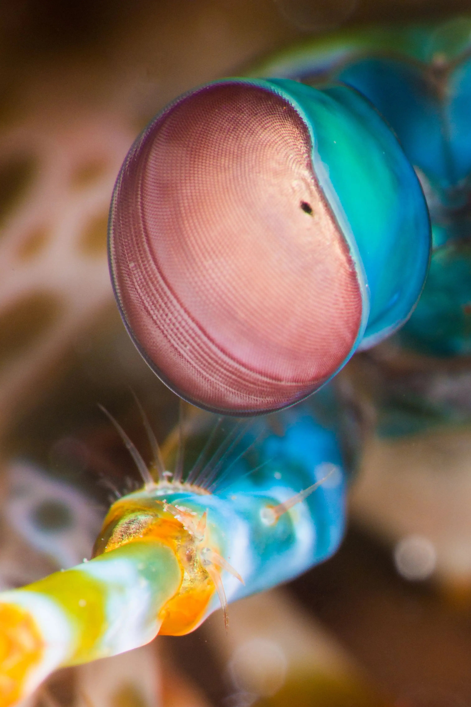

Fatos sobre o Stomatopoda
Informações gerais a respeito do animal. Tudo que você precisa saber.
O camarão mantis ou Odontodactylus scyllarus não é um camarão e, exceto pelo fato de ser um artrópode , também não está
relacionado ao louva-a-deus . Em vez disso, os camarões mantis são 500 espécies diferentes
pertencentes à ordem Stomatopoda. Para distingui-los do camarão verdadeiro, os camarões
louva-a-deus às vezes são chamados de estomatópodes.
Os camarões louva-a-deus são conhecidos por suas garras poderosas, que usam para espancar ou
esfaquear suas presas. Além de seu método de caça feroz, o camarão mantis também é conhecido por
seu extraordinário sentido de visão.
| Reino | Filo | Subfilo | Classe | Subclasse | Ordem |
|---|---|---|---|---|---|
| Animalia | Arthropoda | Crustacea | Malacostraca | Hoplocarida | Stomatopoda |
Visão
Os estomatópodes têm a visão mais complexa do reino animal, superando até a das borboletas . O camarão mantis tem olhos compostos montados em talos e pode girá-los independentemente um do outro para examinar seus arredores. Enquanto os humanos têm três tipos de fotorreceptores, os olhos do camarão mantis têm entre 12 e 16 tipos de células fotorreceptoras. Algumas espécies podem até ajustar a sensibilidade de sua visão de cores.
O aglomerado de fotorreceptores, denominado ommatidia, é organizado em fileiras paralelas em três regiões. Isso dá a cada olho percepção de profundidade e visão trinocular. Os camarões louva-a-deus podem perceber comprimentos de onda do ultravioleta profundo através do espectro visível e no vermelho distante. Eles também podem ver a luz polarizada. Algumas espécies podem perceber luz polarizada circularmente - uma habilidade não encontrada em nenhuma outra espécie animal. Sua visão excepcional dá ao camarão mantis uma vantagem de sobrevivência em um ambiente que pode variar de claro a escuro e permite que ele veja e avalie a distância de objetos brilhantes ou translúcidos.
Comportamento
Os camarões louva-a-deus são altamente inteligentes. Eles reconhecem e se lembram de outras pessoas pela visão e pelo olfato, e demonstram habilidade para aprender. Os animais têm um comportamento social complexo, que inclui lutas ritualizadas e atividades coordenadas entre membros de um par monogâmico. Eles usam padrões fluorescentes para sinalizar uns aos outros e possivelmente a outras espécies.
Dieta e caça
Na maior parte, o camarão mantis é um caçador solitário e recluso. Algumas espécies perseguem ativamente as presas, enquanto outras esperam dentro do covil. O animal mata desdobrando rapidamente suas garras raptoriais com uma aceleração surpreendente de 102.000 m / s2 e velocidade de 23 mps (51 mph). O ataque é tão rápido que ferve a água entre o camarão e sua presa, produzindo bolhas de cavitação. Quando as bolhas entram em colapso, a onda de choque resultante atinge a presa com uma força instantânea de 1.500 newtons . Portanto, mesmo que o camarão erre seu alvo, a onda de choque pode atordoá-lo ou matá-lo. A bolha em colapso também produz luz fraca, conhecida como sonoluminescência. Presas típicas incluem peixes, caramujos, caranguejos, ostras e outros moluscos. Os camarões louva-a-deus também comem membros de sua própria espécie.